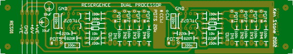
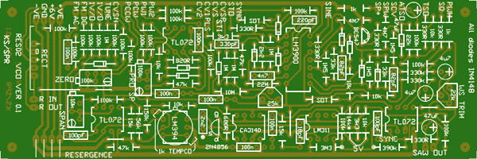
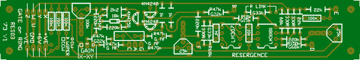
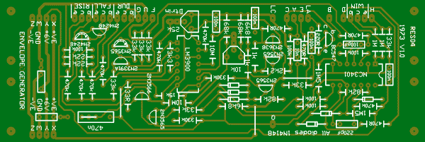
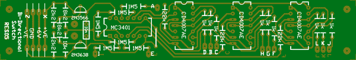

RES01 (tested)
Dual Processor from 1973. Extra inputs. Dual op-amp instead of 741. Early boards are slightly over width at 1.1" wide. The later runs are 1".
1 unit width

RES02 (tested - see resergence group for notes)
VCO. This is NOT the Serge VCO, but rather a more modern design adapted to have the same panel functions as the original from 1973. It also has several extra functions, including a a divide by N, sine and pulse outputs, as well as AC coupled and DC coupled linear inputs. Unlike the original Serge VCO, this conforms to the 1/V oct standard. The VCO core is from the ASM-1, which is of course based on the Electronotes VCO. A standard Serge Processor gives the original CV inputs. The original wave shaper is retained.
2 units width

RES03
Gate/Ring from 1973 (VCA and Ring Modulator). Usually appeared in pairs or lots of 4 on a single PCB. This one predates the circuit easily found on the web, in that it uses +6V. Some component values have been marked R or G to distinguish between those used for the Ring version and the Gate version. NF means not fitted. The capacitor across the LM307 was not fitted in either type on my Serge, though apparently 470n was used on at least the Gate sometimes. The transistors have been positioned in such a way as to allow a dual to be used if available.
There is a triangle of pads provided near the power rails to modify this to 12V operation. The 6v trace needs cutting between 2 pads, and a link put from the common pad to the +12v pad. The later version apparently used a 2N4196 instead of the pair of 2N2428. The pull-down resistor on pad A was 15k and the capacitor in line with pad E was 470n.
1 unit width.

RES04 (tested)
Envelope Generator from 1973 (NOT ADSR). This doubles as an LFO etc. My Serge has 8!
2 units width

RES05
Bi-directional Switch from 1973. 3 separate signal routers. 1/2 the size of the original PCB.
1 unit width
